Prevenzione dal Furto d'Identità
Come prevenire il furto d'identità digitale
La prevenzione rappresenta la prima e più cruciale linea di difesa contro il furto di identità digitale. Adottare proattivamente misure di sicurezza può significare la differenza tra essere una vittima e rimanere protetti.
Password Robuste e Uniche
Utilizzate password lunghe e complesse (almeno 12 caratteri, con lettere maiuscole e minuscole, numeri e simboli) e assicuratevi che siano diverse per ogni account. Un gestore di password può aiutarvi a ricordarle tutte in sicurezza.
Autenticazione a Due Fattori (2FA)
Abilitate sempre la 2FA ovunque sia disponibile. Aggiunge un ulteriore livello di sicurezza richiedendo un secondo metodo di verifica (es. un codice inviato al telefono) oltre alla password.
Cautela sui Social Media
Evitate di condividere eccessivamente dati personali (date di nascita complete, indirizzi, numeri di telefono) sui social network, poiché queste informazioni possono essere usate dai truffatori per ricostruire la vostra identità.

Diffidare di Comunicazioni Sospette
Siate sempre scettici nei confronti di email, messaggi o link che sembrano insoliti o che richiedono informazioni urgenti. Verificate sempre la fonte prima di cliccare o rispondere.
Aggiornamenti Regolari
Mantenete il sistema operativo, i browser e tutte le applicazioni sempre aggiornati. Gli aggiornamenti spesso includono patch di sicurezza che risolvono vulnerabilità note.
Antivirus e Firewall
Installate e mantenete attivi un software antivirus e un firewall affidabili sui vostri dispositivi. Questi strumenti proteggono da malware e accessi non autorizzati.
Wi-Fi Pubblico Sicuro
Evitate di effettuare operazioni sensibili (come banking online) quando siete connessi a reti Wi-Fi pubbliche non protette, poiché possono essere facilmente intercettate. Utilizzate una VPN se necessario.